Q1 (a) થર્મલ રનઅવે વિગતવાર સમજાવો. [3 marks]
જવાબ: બીજેટી (BJT) ટ્રાન્ઝિસ્ટરમાં થર્મલ રનઅવે એક નુકસાનકારક પ્રક્રિયા છે, જેમાં વધતું તાપમાન એક એવું સ્વ-સંચાલિત ચક્ર (cycle) બનાવે છે જે અંતે ટ્રાન્ઝિસ્ટરને બગાડી નાખે છે અથવા તોડી નાખે છે.
flowchart LR
A[Increase in Temperature
તાપમાનમાં વધારો] -->
B[Increase in Ic
કલેક્ટર કરંટ IC માં વધારો]
B --> C[Increase in Power Dissipation
પાવર ડિસીપેશનમાં વધારો]
C --> D[Further Increase in Temperature
તાપમાનમાં વધુ વધારો]
D --> A
- ગરમીની શરૂઆત (Heat Generation): ટ્રાન્ઝિસ્ટરના સામાન્ય કામકાજ દરમિયાન તેનું તાપમાન વધે છે.
- લીકેજ કરંટ (Leakage Current): તાપમાન વધવાની સાથે કલેક્ટર કરંટ ( IC ) માં વધારો થાય છે.
- પાવરનો વ્યય (Power Dissipation): કરંટ વધવાથી પાવરનો વ્યય વધે છે, જેના કારણે તાપમાન હજુ વધારે ઊંચું જાય છે.
- વિનાશક ચક્ર (Destructive Cycle): આ ચક્ર સતત ચાલતું રહે છે જ્યાં સુધી ટ્રાન્ઝિસ્ટર પોતાની મેળે બળીને નાશ ન પામે.
યાદ રાખવાની ટૂંકી રીત (યાદ રાખવાની ટૂંકી રીત (Mnemonic)): "જેમ તાપમાન વધારે, તેમ કરંટ વધારે" (The Higher Temperature, The Higher Current)
Q1 (b) સરળ બ્લોક ડાયાગ્રામ વડે એમ્પ્લીફાયર વ્યાખ્યાયિત કરો એમ્પ્લીફાયર પરિમાણો લખો. [4 marks]
જવાબ: એમ્પ્લીફાયર એ એક ઇલેક્ટ્રોનિક ઉપકરણ છે જે ઇનપુટ સિગ્નલની પાવર, વોલ્ટેજ અથવા કર્રેન્ટમાં વધારો કરે છે.
flowchart LR
A[Input
ઇનપુટ સિગ્નલ] -->|Vin| B[AMPLIFIER
એમ્પ્લીફાયર]
B -->|Vout| C[Output Signal
આઉટપુટ સિગ્નલ]
D[Power Supply
પાવર સપ્લાય] --> B
| એમ્પ્લીફાયર પેરામીટર (Amplifier Parameter) | વર્ણન (ડિસ્ક્રિપ્શન, Description) |
|---|---|
| વોલ્ટેજ ગેઇન (Av) | આઉટપુટ વોલ્ટેજ ભાગયા ઇનપુટ વોલ્ટેજનો ગુણોત્તર |
| કરંટ ગેઇન (Ai) | આઉટપુટ કરંટ ભાગયા ઇનપુટ કરંટનો ગુણોત્તર |
| પાવર ગેઇન (Ap) | વોલ્ટેજ ગેઇન ભાગયા કરંટ ગેઇનનો ગુણાકાર ("Ap = Av × Ai") |
| બેન્ડવિડ્થ | એમ્પ્લીફાયર સંભાળી શકે તેવી ફ્રીક્વન્સીઝની શ્રેણી |
| ઇનપુટ ઈમ્પૅડાન્સ | ઇનપુટ સ્ત્રોત દ્વારા જોવામાં આવતો રેઝિસ્ટન્સ |
| આઉટપુટ ઈમ્પૅડાન્સ | ઇન્ટરનલ રેઝિસ્ટન્સ ઓફ અમ્પ્લીફાયર |
યાદ રાખવાની ટૂંકી રીત (Mnemonic): "VIPS-BIO" ( વોલ્ટેજ ગેઇન (Voltage Gain), ઇનપુટ ઈમ્પિડન્સ (Input impedance), પાવર ગેઇન (Power Gain), સપ્લાય (Supply), બેન્ડવિડ્થ (Bandwidth), આઉટપુટ ઈમ્પિડન્સ (Impedance Output))
Q1 (c) ટ્રાન્ઝિસ્ટરમાં બાયસિંગ વ્યાખ્યાયિત કરો? બાયસિંગ પદ્ધતિઓના પ્રકારો લખો. વોલ્ટેજ ડિવાઇડર બાયસિંગ પદ્ધતિ વિગતવાર સમજાવો.ટ્રાન્ઝિસ્ટરમાં બાયસિંગ વ્યાખ્યાયિત કરો? બાયસિંગ પદ્ધતિઓના પ્રકારો લખો. વોલ્ટેજ ડિવાઇડર બાયસિંગ પદ્ધતિ વિગતવાર સમજાવો. [7 marks]
જવાબ: બાયસિંગ એ ડીસી વોલ્ટેજ લાગુ કરીને ટ્રાન્ઝિસ્ટર માટે સ્થિર ઓપરેટિંગ પોઇન્ટ (Q-પોઇન્ટ) સ્થાપિત કરવાની પ્રક્રિયા છે.
| બાએસીન્ગ મેથડ (Biasing Method) | કી ફીચર્સ (Key Features) |
|---|---|
| ફિક્સ્ડ બાયસ | સરળ, નબળી સ્થિરતા |
| કલેકટર ફીડબેક | સ્વ-વ્યવસ્થિત, વધુ સારી સ્થિરતા |
| વોલ્ટેજ ડિવાઈડર | શ્રેષ્ઠ સ્થિરતા, વ્યાપકપણે ઉપયોગમાં લેવાયેલ |
| એમીટર બાયસ | સારી સ્થિરતા, નકારાત્મક ફીડબેક |
વોલ્ટેજ ડિવાઈડર બાએસીન્ગ (Voltage Divider Biasing):
flowchart LR
VCC((+VCC)) --> R1
R1 --> R2 & B((Base))
R2 --> GND
B --> C((Collector))
B --> E((Emitter))
C --> RC --> VCC
E --> RE --> GND
- R1 & R2: બેઝ વોલ્ટેજ (VB) નક્કી કરે છે
- RE: નકારાત્મક ફીડબેક દ્વારા સ્થિરીકરણ પૂરું પાડે છે
- RC: કલેક્ટર કરંટ અને વોલ્ટેજ ગેઇન નક્કી કરે છે
- Stability: તાપમાનના ફેરફારો સામે શ્રેષ્ઠ સ્થિરતા
- R1–R2 દ્વારા સ્થિર VB મળે છે
- VB ના કારણે બેઝ-એમીટર જંકશન ફોરવર્ડ બાયસ થાય છે
- જો તાપમાન વધે તો IC વધે છે, જેથી RE પર વોલ્ટેજ વધે છે
- પરિણામે VBE ઘટે છે અને કરંટ પાછો ઘટે છે
- આ નકારાત્મક ફીડબેક Q-પોઇન્ટને સ્થિર રાખે છે
કાર્યપ્રણાલી:
યાદ રાખવાની ટૂંકી રીત (Mnemonic): "Divide Voltage Before Transistor Conducts"
Q1 (c) હીટ સિંક સમજાવો. OR [7 marks]
જવાબ: હીટ સિંક એ એક પસ્સીવ હીટ એક્સ્ચેન્જર છે જે ઇલેક્ટ્રોનિક ઉપકરણોમાંથી ગરમીને આસપાસની હવામાં સ્થાનાંતરિત કરે છે.
flowchart LR
A[Heat Source/Transistor
હીટ સોર્સ/ટ્રાન્ઝિસ્ટર] --> B[Interface Material
ઇન્ટરફેસ મટીરીયલ]
B --> C[Heat Sink Base
હીટ સિંક બેઝ]
C --> D[Heat Sink Fins
હીટ સિંક ફિન્સ]
D --> E[Ambient Air
એમ્બિયન્ટ એર]
| કોમ્પોનેન્ટ (Component) | કાર્ય (ફંકશન, Function) |
|---|---|
| બેઝ | ઉપકરણમાંથી ગરમીનું સંચાલન કરે છે |
| ફિન્સ | ગરમીના વિસર્જન માટે સપાટી વિસ્તાર વધારે છે |
| થર્મલ ઇન્ટરફેસ સામગ્રી | ઉપકરણ અને સિંક વચ્ચેનો સંપર્ક સુધારે છે |
| પ્રકારો | એક્સટ્રુડેડ, બોન્ડેડ, ફોલ્ડેડ, ડાઇ-કાસ્ટ |
- થર્મલ રેઝિસ્ટન્સ (Thermal Resistance): ગરમીના વિસર્જન માટે નીચું સારું છે
- સામગ્રી (મટીરીયલ, Material): સારી વાહકતા માટે સામાન્ય રીતે એલ્યુમિનિયમ અથવા તાંબુ
- સપાટી ક્ષેત્રફળ (સુરફસ એરિયા,Surface Area): વધુ ફિન્સ એટલે સારી ઠંડક
- હવાનો પ્રવાહ (એર ફલૉ, Air Flow): કાર્યક્ષમ ગરમી દૂર કરવા માટે મહત્વપૂર્ણ
યાદ રાખવાની ટૂંકી રીત (Mnemonic): "હીટ સિંક ટ્રાન્ઝિસ્ટરને ચાલુ રાખે છે"
Q2(a) ડી.સી. અને એ.સી. લોડ લાઇન્સનું વર્ણન કરો. [3 marks]
જવાબ: લોડ લાઇનો ગ્રાફિકલી ટ્રાન્ઝિસ્ટરના લાક્ષણિક વળાંકો પરના શક્ય ઓપરેટિંગ બિંદુઓનું પ્રતિનિધિત્વ કરે છે.
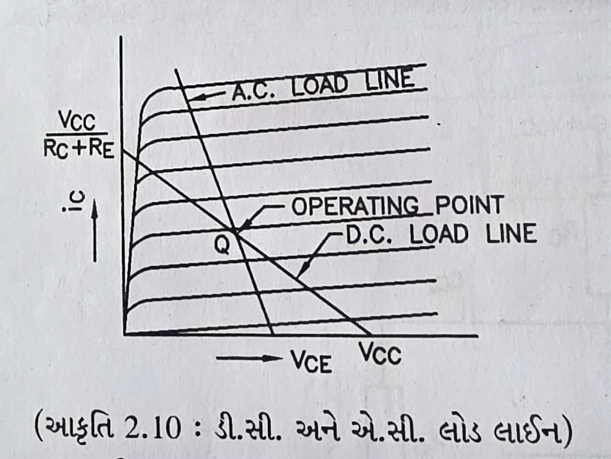Ic ↑ | | DC Load Line | ╱ Q-point | ╱ | * | ╱ AC Load Line | ╱ | ╱ | ╱ |╱ +----------------→ Vce 0 Vcc
-
ડીસી લોડ લાઇન (DC Load Line): ડીસી પરિસ્થિતિઓ હેઠળ બધા શક્ય ઓપરેટિંગ પોઇન્ટ બતાવે છે
- સમીકરણ (Equation): Ic = (VCC - VCE)/RC
- અંતિમ બિંદુઓ (Endpoints): (0, VCC/RC) અને (VCC, 0)
-
એસી લોડ લાઇન (AC Load Line): AC સિગ્નલ હેન્ડલિંગ દરમિયાન ઓપરેટિંગ પોઈન્ટ બતાવે છે
- સ્ટીપર સ્લોપ (Steeper Slope): AC રેઝિસ્ટન્સ DC કરતા ઓછો હોવાથી
- Q-પોઇન્ટ પર કેન્દ્રિત (Centered at Q-point): પક્ષપાત દ્વારા સ્થાપિત કાર્યકારી બિંદુ
યાદ રાખવાની ટૂંકી રીત (Mnemonic): "ડીસી સંપૂર્ણપણે ડ્રો કરે છે, એસી કોર્સ બદલે છે"
Q2 (b) એમ્પ્લીફાયરના બેન્ડવિડ્થ અને ગેઇન-બેન્ડવિડ્થ ગુણાંકને સંક્ષિપ્તમાં સમજાવો. [4 marks]
જવાબ: એમ્પ્લીફાયર ફ્રીક્વન્સી કામગીરી માટે બેન્ડવિડ્થ અને ગેઇન-બેન્ડવિડ્થ પ્રોડક્ટ મુખ્ય સ્પષ્ટીકરણો છે.
flowchart LR
A[Input
ઇનપુટ] --> B[Amplifier
Gain × Bandwidth
એમ્પ્લીફાયર
ગેઇન × બેન્ડવિડ્થ]
B --> C[Output
આઉટપુટ]
| પેરામીટર (Parameter) | વર્ણન (ડિસ્ક્રિપ્શન, Description) |
|---|---|
| બેન્ડવિડ્થ | ફ્રીક્વન્સી રેન્જ જ્યાં ગેઇન 3dB કરતા ઓછો ઘટે છે |
| લોઅર કટઓફ (f₁) | નીચા સ્તરે જ્યાં ગેઇન 3dB ઘટે છે ત્યાં ફ્રીક્વન્સી |
| અપર કટઓફ (f₂) | ઉચ્ચ સ્તરે જ્યાં ગેઇન 3dB ઘટે છે ત્યાં ફ્રીક્વન્સી |
| ગેઇન-બેન્ડવિડ્થ પ્રોડક્ટ | ગેઇન અને બેન્ડવિડ્થનું ઉત્પાદન, સ્થિર રહે છે |
- બેન્ડવિડ્થ ફોર્મ્યુલા: BW = f₂ - f₁
- ગેઇન-બેન્ડવિડ્થ: જ્યારે ગેઇન બદલાય છે ત્યારે તે સ્થિર રહે છે
- Trade-off: વધારે ગેઇન એટલે ઓછી બેન્ડવિડ્થ
યાદ રાખવાની ટૂંકી રીત (Mnemonic): "સારી બેન્ડવિડ્થ સંપૂર્ણ ટ્રાન્સમિશન મેળવે છે"
Q2 (c) બે તબક્કાના RC કપલ્ડ એમ્પ્લીફાયરના ફ્રીક્વન્સી રિસ્પોન્સ સમજાવો. [7 marks]
જવાબ: બે-તબક્કાના RC કપલ્ડ એમ્પ્લીફાયરનો ફ્રીક્વન્સી રિસ્પોન્સ બતાવે છે કે ગેઇન ફ્રીક્વન્સી સાથે કેવી રીતે બદલાય છે.
flowchart LR
A[Input
ઇનપુટ] --> B[First
Amplifier
Stage
ફર્સ્ટ
એમ્પ્લીફાયર
સ્ટેજ]
B -->|RC Coupling
આરસી કપલિંગ| C[Second
Amplifier
Stage
સેકન્ડ
એમ્પ્લીફાયર
સ્ટેજ]
C --> D[Output
આઉટપુટ]
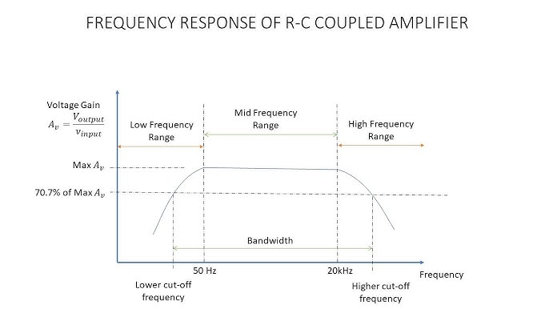Gain(dB) ↑ | Mid-frequency band | ┌───────────────┐ | │ │ | │ │ | ╱│ │╲ | ╱ │ │ ╲ | ╱ │ │ ╲ |╱ │ │ ╲ +────┴───────────────┴────→ Frequency(Hz) f₁ f₂ Low freq. High freq.
-
લો ફ્રીક્વન્સી રેસ્પોન્સે: કપલિંગ કેપેસિટર્સ દ્વારા મર્યાદિત
- રોલ-ઓફ રેટ: દરેક તબક્કા માટે -20 dB/દાયકા
-
મીડ ફ્રીક્વન્સી રેસ્પોન્સે: મહત્તમ અને સપાટ ગેઇન રિજયન
- ટોટલ ગેઇન: વ્યક્તિગત તબક્કાના ગેઇન નું ઉત્પાદન
-
હાઈ ફ્રીક્વન્સી રેસ્પોન્સે: ટ્રાન્ઝિસ્ટર કેપેસિટેન્સ દ્વારા મર્યાદિત
- રોલ-ઓફ રેટ: દરેક તબક્કા માટે -20 dB/દાયકા
યાદ રાખવાની ટૂંકી રીત (Mnemonic): "ઓછા કપલ્સ નબળા, ઉચ્ચ કેપેસીટન્સ બ્લોક્સ" (Low Couples Weakly, High Capacitance Blocks)
Q2 (a) ટ્રાન્ઝિસ્ટર બાયસિંગ માટે ફિક્સ્ડ બાયસ સર્કિટ સમજાવો. OR [3 marks]
જવાબ: ટ્રાન્ઝિસ્ટર માટે ફિક્સ્ડ બાયસ એ સૌથી સરળ બાયસિંગ પદ્ધતિ છે, જેમાં બેઝ સાથે જોડાયેલા સિંગલ રેઝિસ્ટરનો ઉપયોગ થાય છે.
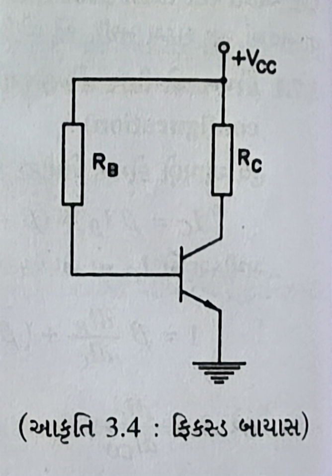+Vcc | R | | C ------+---o | | Vin | RC | | | | | +Vcc | | +-----+ Base Collector | E | GND
- સર્કિટ એલિમેન્ટ: બેઝ રેઝિસ્ટર (RB) અને કલેક્ટર રેઝિસ્ટર (RC)
- બેઝ કરંટ: IB = (VCC - VBE)/RB
- કલેક્ટર કરંટ: IC = β × IB
- ખામીઓ: નબળી સ્થિરતા, તાપમાનમાં ફેરફારથી પ્રભાવિત
યાદ રાખવાની ટૂંકી રીત (Mnemonic): "ફિક્સ્ડ બાયસ (પસંદ કરો), અને અસ્થિરતાનો મુશ્કેલીનો સામનો કરો." (Fix Bias, Face Burden) (of instability)
Q2 (b) સિંગલ સ્ટેજ એમ્પ્લીફાયરનો ફ્રીક્વન્સી રિસ્પોન્સ સમજાવો. OR [4 marks]
જવાબ: સિંગલ-સ્ટેજ એમ્પ્લીફાયરનો ફ્રીક્વન્સી રિસ્પોન્સ વિવિધ ફ્રીક્વન્સીઝના ગેઇનમાં તફાવત જોવા મળે છે.
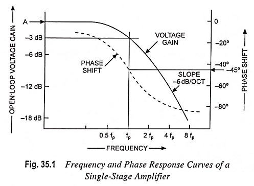Gain(dB) ↑ | Mid-frequency band | ┌───────────────┐ | │ │ | ╱│ │╲ | ╱ │ │ ╲ | ╱ │ │ ╲ |╱ │ │ ╲ +────┴───────────────┴────→ Frequency(Hz) f₁ f₂ Low freq. High freq.
| ફ્રીક્વન્સી રેઈજ (Frequency Range) | લાક્ષણિકતાઓ (લાક્ષણિકતાઓ (Characteristics)s) |
|---|---|
| લો ફ્રીક્વન્સી રેસ્પોન્સે | કપલિંગ કેપેસિટરને કારણે ગેઇનમાં ઘટાડો |
| મીડ ફ્રીક્વન્સી રેસ્પોન્સે | મહત્તમ અને સતત ગેઇન |
| હાઈ ફ્રીક્વન્સી રેસ્પોન્સે | ટ્રાન્ઝિસ્ટર કેપેસિટેન્સને કારણે ગેઇન ઘટે છે |
- લોઅર કટોફ ફ્રીક્વન્સી: કપલિંગ કેપેસિટર્સ દ્વારા નક્કી
- અપર કટઓફ્ફ ફ્રીક્વન્સી: આંતરિક ટ્રાન્ઝિસ્ટર કેપેસિટેન્સ દ્વારા મર્યાદિત
- બેન્ડવિડ્થ: લોઅર અને અપર કટઓફ ફ્રીક્વન્સીઝ વચ્ચેની શ્રેણી
યાદ રાખવાની ટૂંકી રીત (Mnemonic): "નીચું મધ્યમ ઉચ્ચ - કેપેસિટર્સ અહીં મહત્વપૂર્ણ છે" (Low Middle High - Capacitors Matter Here)
Q2 (c) ટ્રાન્સફોર્મર કપલ્ડ એમ્પ્લીફાયર અને આરસી કપલ્ડ એમ્પ્લીફાયરની સરખામણી કરો OR [7 marks]
જવાબ: RC coupled amplifier અને transformer coupled amplifier બે પ્રકારના amplifiers છે, જે સિગ્નલ ટ્રાન્સફર માટે અલગ coupling elements વાપરે છે અને તેઓના બૅન્ડવિડ્થ, કાર્યક્ષમતા, અને ઉપયોગમાં ફરક પડે છે.
| પેરામીટર (Parameter) | આરસી કપલ્ડ એમ્પ્લીફાયર (RC Coupled Amplifier) | ટ્રાન્સફોર્મર કપલ્ડ એમ્પ્લીફાયર (Transformer Coupled Amplifier) |
|---|---|---|
| કપલિંગ એલિમેન્ટ | રેઝિસ્ટર અને કેપેસિટર | ટ્રાન્સફોર્મર |
| ફ્રીક્વન્સી રેસ્પોન્સે | વાઇડ બેન્ડવિડ્થ | મર્યાદિત બેન્ડવિડ્થ |
| કાર્યક્ષમતા | નીચું (20-25%) | ઉચ્ચ (50-60%) |
| કદ & વજન | નાનું અને હલકું | ભારે અને ભારે |
| કિંમત | સસ્તું | ખર્ચાળ |
| ઇમ્પિડન્સ મેચિંગ | ખરાબ મેચિંગ | ઉત્તમ મેચિંગ |
| વિકૃતિ | ઓછી વિકૃતિ | કોર સેચ્યુરેશનને કારણે વધારે |
| DC આઇસોલેશન | સારું આઇસોલેશન | ઉત્તમ આઇસોલેશન |
| એપ્લિકેશન્સ | સામાન્ય હેતુ | ઑડિયો પાવર એમ્પ્લીફાયર |
flowchart TB
subgraph RC [RC આરસી]
A1[Transistor
ટ્રાન્ઝિસ્ટર 1] -->|Coupling Capacitor
કપલિંગ કેપેસિટર| B1[Transistor
ટ્રાન્ઝિસ્ટર 2]
end
subgraph Transformer [Transformer ટ્રાન્સફોર્મર]
A2[Transistor
ટ્રાન્ઝિસ્ટર 1] -->|Transformer
ટ્રાન્સફોર્મર| B2[Transistor
ટ્રાન્ઝિસ્ટર 2]
end
યાદ રાખવાની ટૂંકી રીત (Mnemonic): "RC એટલે કે લંબાઈ (Breadth), અને ટ્રાન્સફોર્મર એટલે કે શક્તિ (Power)." (RC Takes Breadth, Transformer Takes Power)
Q3 (a) ડાયરેક્ટ કપલ્ડ એમ્પ્લીફાયરને સંક્ષિપ્તમાં સમજાવો. [3 marks]
જવાબ: ડાયરેક્ટ-કપ્લ્ડ એમ્પ્લીફાયર કપલિંગ કેપેસિટર્સ અથવા ટ્રાન્સફોર્મર્સ વિના સ્ટેજને જોડે છે, જે ડીસી સિગ્નલ એમ્પ્લીફિકેશનને મંજૂરી આપે છે.
flowchart LR
In[Input
ઇનપુટ] --> A[First Stage
પહેલો સ્ટેજ]
A -- Direct Connection
સીધું જોડાણ --> B[Second Stage
બીજો સ્ટેજ]
B --> Out[Output
આઉટપુટ]
- DC સિગ્નલ હેન્ડલિંગ: ખૂબ ઓછી ફ્રીક્વન્સી અને ડીસીને એમ્પ્લીફાય કરી શકે છે
- કોઈ કપલિંગ તત્વો નથી: પ્રથમ તબક્કાનું આઉટપુટ સીધા આગામી તબક્કાના ઇનપુટ સાથે જોડાય છે
- ફ્રીક્વન્સી રિસ્પોન્સ: ઉત્તમ ઓછી-ફ્રીક્વન્સી પ્રતિભાવ
- ખામીઓ: થર્મલ ડ્રિફ્ટ, બાયસ સ્ટેબિલિટી સમસ્યાઓ
યાદ રાખવાની ટૂંકી રીત (Mnemonic): "સીધા જોડાયેલા, શૂન્ય ફ્રીક્વન્સી સુધી પૂર્ણ" (Directly Connected, Down to Complete zero frequency)
Q3 (b) એમ્પ્લીફાયરના ફ્રીક્વન્સી રિસ્પોન્સ પર એમીટર બાયપાસ કેપેસિટર અને કપલિંગ કેપેસિટરની અસરો સમજાવો. [4 marks]
જવાબ:
| કેપેસિટર | કાર્ય (Function) | ફ્રીક્વન્સી રિસ્પોન્સ પર અસર |
|---|---|---|
| એમીટર બાયપાસ કેપેસિટર (Emitter Bypass Capacitor) | RE ની આસપાસ AC સિગ્નલને રસ્તો આપે છે. | મિડ (Mid) અને હાઈ (High) ફ્રીક્વન્સી પર ગેઈન (Gain) વધારે છે. |
| કપલિંગ કેપેસિટર (Coupling Capacitor) | DC ને રોકે છે, AC ને પસાર થવા દે છે. | લોઅર કટ-ઓફ (Lower cutoff) ફ્રીક્વન્સી નક્કી કરે છે. |
flowchart TB
subgraph "Effects on Gain (ગેઈન પર અસરો)"
A[Without Capacitors
કેપેસિટર વગર] -->|"Low Gain
લો ગેઇન"| B[With Coupling Only
માત્ર કપલિંગ સાથે]
B -->|"Medium Gain
મધ્યમ ગેઇન"| C[With Coupling + Bypass
કપલિંગ + બાયપાસ સાથે]
C -->|"High Gain
ઉચ્ચ ગેઇન"| D[Ideal Response
આદર્શ રિસ્પોન્સ]
end
-
એમીટર બાયપાસ કેપેસિટર (Emitter Bypass Capacitor):
- વગર: નેગેટિવ ફીડબેકને કારણે ગેઈન ઓછો મળે છે.
- સાથે: AC સિગ્નલ માટે RE બાયપાસ થવાથી વધારે ગેઈન મળે છે.
-
કપલિંગ કેપેસિટર (Coupling Capacitor):
- નાનું મૂલ્ય: લો-ફ્રીક્વન્સી રિસ્પોન્સ નબળો મળે છે.
- મોટું મૂલ્ય: લો-ફ્રીક્વન્સી રિસ્પોન્સ સારો મળે છે.
યાદ રાખવાની ટૂંકી રીત (Mnemonic): "કપલિંગ લો-ફ્રીક્વન્સીને નિયંત્રણ કરે છે, બાયપાસ બધું જ બુસ્ટ કરે છે." (Coupling Controls Lows, Bypass Boosts All)
Q3 (c) ટ્રાન્ઝિસ્ટર ટુ પોર્ટ નેટવર્ક દોરો અને તેના માટે h-પેરામીટર્સનું વર્ણન કરો. હાઇબ્રિડ પેરામીટર્સના ફાયદા લખો. [7 marks]
જવાબ: બે-પોર્ટ નેટવર્ક એ h-પેરામીટર્સ (હાઇબ્રિડ પેરામીટર્સ) નો ઉપયોગ કરીને ટ્રાન્ઝિસ્ટર વર્તણૂકનું વિશ્લેષણ કરવા માટેનું એક મોડેલ છે.
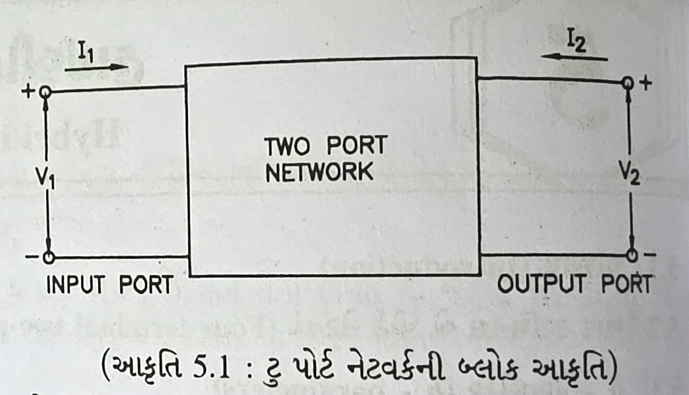i₁ i₂ → ← | | +----------+------------------+---------+ | | | | | | | | v₁ | +-----+------+ +-----+------+ | ↓ | | | | | | | | | | Two-Port | | ↓ | | +----+ Network +----+ v₂ +---+ | | | | | | | | | | | | | +------------+ +------------+ | | | +---------------------------------------+
| હાઇબ્રિડ પેરામીટર્સ (H-Parameter) | વ્યાખ્યા (Definition) | ભૌતિક અર્થ (Physical Meaning) |
|---|---|---|
| h₁₁ (hᵢₑ) | આઉટપુટ શોર્ટ-સર્કિટ સાથે ઇનપુટ ઇમ્પિડન્સ | બેઝ-એમીટર રેઝિસ્ટન્સ |
| h₁₂ (hᵣₑ) | ઇનપુટ ઓપન-સર્કિટ સાથે રિવર્સ વોલ્ટેજ ગેઈન | આઉટપુટથી ઇનપુટ તરફનું ફીડબેક |
| h₂₁ (hfₑ) | આઉટપુટ શોર્ટ-સર્કિટ સાથે ફોરવર્ડ કરંટ ગેઈન | કરંટ ગેઈન (β) |
| h₂₂ (hoₑ) | ઇનપુટ ઓપન-સર્કિટ સાથે આઉટપુટ એડમિટન્સ | આઉટપુટ કન્ડક્ટન્સ |
H-Parameters ના ફાયદા (Advantages of H-Parameters):
- સરળ માપન (Easily Measured): સાદા સર્કિટ વડે સીધું માપન શક્ય છે.
- મિશ્રિત એકમો (Mixed Units): વોલ્ટેજ અને કરંટના ગુણોત્તરનો ઉપયોગ કરે છે.
- મોડેલની ચોકસાઈ (Model Accuracy): ટ્રાન્ઝિસ્ટરની વાસ્તવિક વર્તનની ખૂબ નજીક છે.
- ગાણિતિક સરળતા (Mathematical Simplicity): વિશ્લેષણ માટે રેખીય (Linear) સમીકરણોનો ઉપયોગ થાય છે.
યાદ રાખવાની ટૂંકી રીત (Mnemonic): "ઇનપુટ, રિવર્સ, ફોરવર્ડ, આઉટપુટ - IRFO પેરામીટર્સ" (Input, Reverse, Forward, Output - IRFO Parameters)
Q3 (a) એમ્પ્લીફાયરનો ફ્રીક્વન્સી રિસ્પોન્સ દોરો અને તેમાં અપર કટ-ઓફ ફ્રીક્વન્સી, લોઅર કટ-ઓફ ફ્રીક્વન્સી, બેન્ડવિડ્થ અને મિડ-ફ્રીક્વન્સી ગેઈન દર્શાવો. OR [3 marks]
જવાબ: ફ્રીક્વન્સી રિસ્પોન્સ ગ્રાફ દર્શાવે છે કે ફ્રીક્વન્સી બદલાતા એમ્પ્લીફાયરના ગેઈનમાં કેવી રીતે ફેરફાર થાય છે.
Gain(dB) ↑ | Mid-frequency gain | ┌─────────────────────────────┐ | │ │ 0.707×Av -+ +- | /│ │\ | / │ │ \ | / │ │ \ |/ │ │ \ +────┴─────────────────────────────┴────→ Frequency(log scale) f₁ f₂ │ │ │←───────── Bandwidth ─────────→│ │ │ Lower cutoff Upper cutoff frequency frequency
- મિડ-ફ્રીક્વન્સી ગેઈન (Mid-frequency Gain - Av): ફ્લેટ વિસ્તારમાં મળતો મહત્તમ ગેઈન.
- લોઅર કટ-ઓફ ફ્રીક્વન્સી (Lower Cutoff Frequency - f₁): જે ફ્રીક્વન્સી પર ગેઈન ઘટીને 0.707×Av (-3dB) થાય તે.
- અપર કટ-ઓફ ફ્રીક્વન્સી (Upper Cutoff Frequency - f₂): જે ફ્રીક્વન્સી પર ગેઈન ઘટીને 0.707×Av (-3dB) થાય તે.
- બેન્ડવિડ્થ (Bandwidth): અપર અને લોઅર કટ-ઓફ ફ્રીક્વન્સી વચ્ચેનો તફાવત (f₂ - f₁).
યાદ રાખવાની ટૂંકી રીત (Mnemonic): "લોઅર બેન્ડવિડ્થ અપર એમ્પ્લીફાયર રિસ્પોન્સ બનાવે છે" (Lower Bandwidth Upper Makes Amplifier Response)
Q3 (b) ટ્યુન કરેલ એમ્પ્લીફાયર તરીકે ઉપયોગમાં લેવાતા ટ્રાન્ઝિસ્ટરનું વર્ણન કરો. OR [4 marks]
જવાબ: ટ્યુન કરેલ એમ્પ્લીફાયર ચોક્કસ ફ્રીક્વન્સીઝ પર પસંદગીયુક્ત રીતે સિગ્નલોને વિસ્તૃત કરવા માટે LC રેઝોનન્ટ સર્કિટનો ઉપયોગ કરે છે.
flowchart LR
A[Input Signal
ઇનપુટ સિગ્નલ] --> B[Transistor Amplifier
ટ્રાન્ઝિસ્ટર એમ્પ્લીફાયર]
B --> C[LC Tuned Circuit
LC ટ્યુન્ડ સર્કિટ]
C --> D[Output Signal
આઉટપુટ સિગ્નલ]
| કોમ્પોનેન્ટ (Component) | કાર્ય (Function) |
|---|---|
| LC ટાંકી સર્કિટ | ચોક્કસ ફ્રીક્વન્સી પર પડઘો પાડે છે |
| ટ્રાન્ઝિસ્ટર | એમ્પ્લીફિકેશન પૂરું પાડે છે |
| રેઝોનન્સ ફ્રીક્વન્સી | f = 1/(2π√LC) |
| ગુણવત્તા પરિબળ (Q) | બેન્ડવિડ્થ નક્કી કરે છે |
- ઉચ્ચ પસંદગી (High Selectivity): રેઝોનન્ટ ફ્રીક્વન્સી પર સિગ્નલોને વિસ્તૃત કરે છે
- એપ્લિકેશન્સ (Applications): આરએફ રીસીવર, ટ્રાન્સમીટર, સંદેશાવ્યવહાર
- પ્રકારો (Types): સિંગલ-ટ્યુન્ડ, ડબલ-ટ્યુન્ડ, સ્ટેગર-ટ્યુન્ડ
- બેન્ડવિડ્થ (Bandwidth): Q પરિબળના વ્યસ્ત પ્રમાણસર
યાદ રાખવાની ટૂંકી રીત (Mnemonic): "એલસી ટ્યુનિંગ સિગ્નલોને ચોક્કસ રીતે પસંદ કરે છે" (Tuning LC Selects Signals Precisely)
Q3 (c) બે પોર્ટ નેટવર્કમાં h પેરામીટર્સનું મહત્વ સમજાવો. CE એમ્પ્લીફાયર માટે h-પેરામીટર્સ સર્કિટ દોરો. OR [7 marks]
જવાબ: H-પેરામીટર્સ બે-પોર્ટ નેટવર્ક તરીકે ટ્રાન્ઝિસ્ટર સર્કિટનું વિશ્લેષણ કરવા માટે સંપૂર્ણ ગાણિતિક મોડેલ પૂરું પાડે છે.
h-પેરામીટર્સનું મહત્વ (Importance of h-parameters):
| પાસું (આસ્પેક્ટ, Aspect) | મહત્વ (Importance) |
|---|---|
| સર્કિટ વિશ્લેષણ | જટિલ સર્કિટ માટે સરળ સમીકરણો |
| ડિઝાઇન ગણતરીઓ | પ્રેડિક્ટ ગેઇન, ઇનપુટ/આઉટપુટ ઈમ્પૅડાન્સ |
| ઉત્પાદક સ્પેક્સ | ટ્રાન્ઝિસ્ટર લાક્ષણિકતાઓ સ્પષ્ટ કરવાની માનક રીત |
| સ્થિરતા વિશ્લેષણ | સ્થિરતાની સ્થિતિ નક્કી કરો |
| ફ્રીક્વન્સી નિર્ભરતા | વિવિધ ફ્રીક્વન્સીઝમાં મોડેલ વર્તન |
CE એમ્પ્લીફાયર h-પેરામીટર સમકક્ષ સર્કિટ (CE Amplifier h-parameter equivalent circuit):
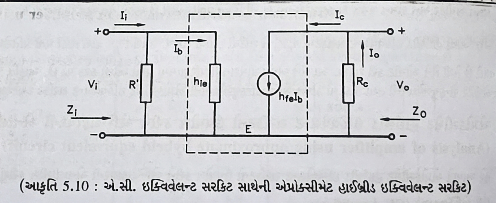+-------+ RC | | ┌─┐ ┌─┐ | | ┌──┘ └──┐ IB─→ | | | | | | | +---o Vout Vin o───┤ hie hre×Vce | | | | | | | | hoe | | hfe×ib | | | | | | +-------+ +-------+ | | └───────────┘ GND
- ઇનપુટ બાજુ:
- hie (ઇનપુટ ઇમ્પીડેન્સ): બેઝ સાથે શ્રેણીમાં એક આંતરિક રેઝિસ્ટન્સ (AC સર્કિટમાં RB), ઇનપુટ ઇમ્પીડેન્સનું પ્રતિનિધિત્વ કરે છે.
- ઇનપુટ અને આઉટપુટ વચ્ચે:
- hfe (ફોરવર્ડ કરંટ ગેઇન): કલેક્ટર અને એમિટર વચ્ચે hfeIs (અથવા βIb) મૂલ્યનો કરન્ટ-કંટ્રોલ્ડ કરંટ સ્ત્રોત (CCCS), આઉટપુટ કરંટ ઉત્પન્ન કરે છે.
- hre (રિવર્સ વોલ્ટેજ ગેઇન): કલેક્ટરથી બેઝ સુધી એક નાનો વોલ્ટેજ સ્ત્રોત (hreVc), સામાન્ય રીતે CE વિશ્લેષણમાં અવગણવામાં આવે છે કારણ કે તે ખૂબ નાનું હોય છે.
- આઉટપુટ બાજુ:
- hoe (આઉટપુટ પ્રવેશ): કલેક્ટરની સમાંતરમાં ટ્રાન્ઝિસ્ટરના આઉટપુટ રેઝિસ્ટન્સ ro= 1 / hoe દશાવે છે.
યાદ રાખવાની ટૂંકી રીત (Mnemonic): "ઇનપુટ રેઝિસ્ટન્સ , ફીડબેક ગુણોત્તર, ફોરવર્ડ ગેઇન, આઉટપુટ વાહકતા" (Input Resistance, Feedback Ratio, Forward gain, Output conductance)
Q4 (a) ડાયોડ ક્લિપર સર્કિટનું જરૂરી આકૃતિ સાથે વર્ણન કરો. [3 marks]
જવાબ: ક્લિપર સર્કિટ ચોક્કસ વોલ્ટેજ સ્તર કરતાં વધી ગયેલા ઇનપુટ સિગ્નલના એક ભાગને મર્યાદિત કરે છે અથવા ક્લિપ કરે છે.
flowchart LR
A[Input Signal
ઇનપુટ સિગ્નલ] --> B[Diode Clipper
ડાયોડ ક્લિપર]
B --> C[Output Signal
આઉટપુટ સિગ્નલ]
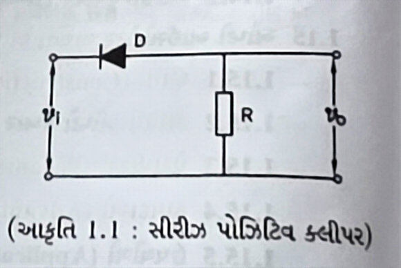Input Output o─────┬───────────────o | | D1 ├────▶|─────┐ | ─┴─ R V | │ └───────────┘ Ground
- ઓપરેશન (Operation): જ્યારે વોલ્ટેજ થ્રેશોલ્ડ કરતાં વધી જાય ત્યારે ડાયોડ વાહક બને છે
- પ્રકારો (Types):
- પોઝિટિવ ક્લિપર (Positive Clipper): ક્લિપ પોઝિટિવ હાફ-સાયકલ
- નેગેટિવ ક્લિપર (Negative Clipper): ક્લિપ્સ નકારાત્મક અર્ધ-ચક્ર
- પક્ષપાતી ક્લિપર (Biased Clipper): શૂન્ય સિવાયના વોલ્ટેજ સ્તરે ક્લિપ્સ
યાદ રાખવાની ટૂંકી રીત (Mnemonic): "પ્રીસેટ પોઈન્ટ પાસ કરીને ભાગોની ક્લિપ કરો" (Clip Portions Passing Preset Points)
Q4 (b) LDR પર ટૂંકી નોંધ સમજાવો. [4 marks]
જવાબ: LDR (લાઇટ ડિપેન્ડન્ટ રેઝિસ્ટર) એ એક ફોટોરેઝિસ્ટર છે જેનો પ્રતિકાર પ્રકાશની તીવ્રતા વધવા સાથે ઘટે છે.
flowchart LR
A[Light
પ્રકાશ] --> B[LDR
એલડીઆર]
B --> C[Resistance Changes
રેઝિસ્ટન્સ ફેરફારો]
| ગુણધર્મ (Property) | વર્ણન (ડિસ્ક્રિપ્શન, Description) |
|---|---|
| બનાવટ | કેડમિયમ સલ્ફાઇડ (CdS) અથવા કેડમિયમ સેલેનાઇડ (CdSe) |
| રેઝિસ્ટન્સ રેઈજ | 1MΩ (dark) થી થોડા KΩ (bright light) |
| રિસ્પોન્સ સમય | સામાન્ય રીતે 10-100ms |
| સ્પેક્ટ્રલ રિસ્પોન્સ | દૃશ્યમાન સ્પેક્ટ્રમમાં મહત્તમ સંવેદનશીલતા |
- પ્રકાશ શોષણ (Light Absorption): મફત કેરિયર્સ જનરેટ કરે છે
- રેઝિસ્ટન્સ (Resistance): પ્રકાશની તીવ્રતાના વ્યસ્ત પ્રમાણસર
- એપ્લિકેશન્સ (Applications): લાઇટ સેન્સર, ઓટોમેટિક લાઇટિંગ, કેમેરા એક્સપોઝર નિયંત્રણ
- પ્રતીક (Symbol): અંદરની તરફ નિર્દેશ કરતા તીર સાથે ચલ રેઝિસ્ટર
યાદ રાખવાની ટૂંકી રીત (Mnemonic): "પ્રકાશ પ્રતિકાર ઘટાડે છે" (Light Decreases Resistance)
Q4 (c) ડાર્લિંગ્ટન જોડી અને તેના ઉપયોગો સમજાવો. [7 marks]
જવાબ: ડાર્લિંગ્ટન જોડીમાં બે ટ્રાન્ઝિસ્ટર જોડાયેલા હોય છે જેથી પહેલા દ્વારા વિસ્તૃત કરાયેલ કરંટ બીજા દ્વારા વધુ વિસ્તૃત થાય.
flowchart LR
A[Input Signal
ઇનપુટ સિગ્નલ] --> B[Transistor
ટ્રાન્ઝિસ્ટર 1]
B --> C[Transistor
ટ્રાન્ઝિસ્ટર 2]
C --> D[Output Signal
આઉટપુટ સિગ્નલ]
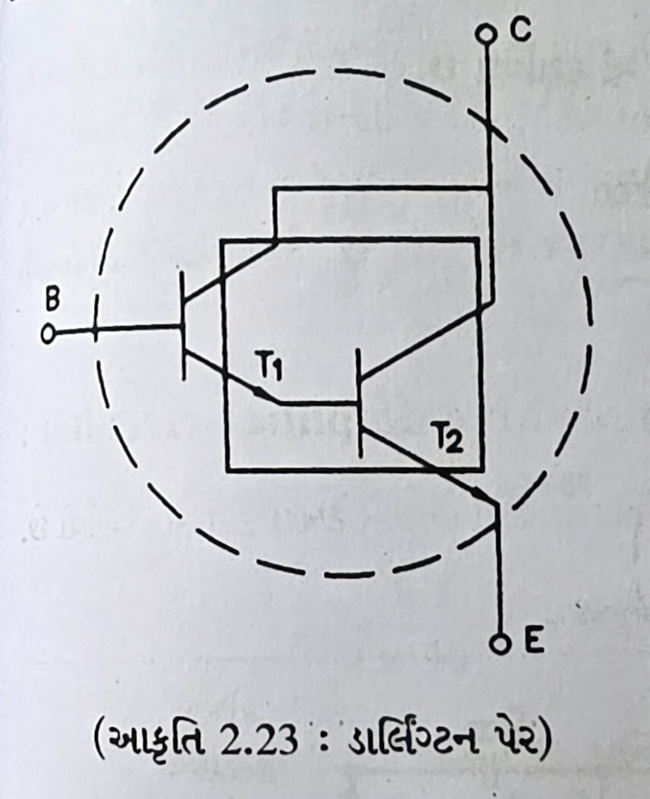+Vcc │ │ R │ │ Base o─────┴───┐ | | | | Collector | +-------o | | | | └─┬─┘ │ └─┐ | | | | | | └─┬─┘ │ │ GND
| લાક્ષણિકતાઓ (Characteristics) | વર્ણન (ડિસ્ક્રિપ્શન, Description) |
|---|---|
| કરંટ ગેઇન | β_total = β₁ × β₂ (very high) |
| ઇનપુટ ઈમ્પિડન્સ | Very high (β₂ × R_e1) |
| આઉટપુટ ઈમ્પિડન્સ | નીચું |
| સ્વિચિંગ સ્પીડ | સિંગલ ટ્રાન્ઝિસ્ટર કરતા ધીમું |
એપ્લિકેશન્સ (Applications):
- પાવર એમ્પ્લીફાયર (Power Amplifiers): ઉચ્ચ વર્તમાન લાભ કાર્યક્રમો
- ઑડિઓ એમ્પ્લીફાયર્સ (Audio Amplifiers): ઉચ્ચ ઇન્પુટ ઇમ્પિડન્સ સ્ટેજ
- બફર સર્કિટ્સ (Buffer Circuits): લોડિંગ અસરો ઓછી કરવી
- મોટર નિયંત્રણ (Motor Control): ઉચ્ચ-કરંટના ભારણને ચલાવવું
- Touch Sensitive Switches (Touch Sensitive Switches): ઊંચા લાભને કારણે ઉચ્ચ સંવેદનશીલતા
યાદ રાખવાની ટૂંકી રીત (Mnemonic): "ડબલ ટ્રાન્ઝિસ્ટર ખરેખર ખૂબ જ વિસ્તૃત કરે છે" (Double Transistors Amplify Really Greatly)
Q4 (a) ડાયોડ ક્લેમ્પર સર્કિટનું જરૂરી આકૃતિ સાથે વર્ણન કરો. OR [3 marks]
જવાબ: ક્લેમ્પર સર્કિટ તેના આકારમાં ફેરફાર કર્યા વિના DC કોમ્પોનેન્ટ ઉમેરીને સમગ્ર વેવફોર્મને ઉપર અથવા નીચે ખસેડે છે.
flowchart LR
A[Input Signal
ઇનપુટ સિગ્નલ] --> B[Diode Clamper
ડાયોડ ક્લેમ્પર]
B --> C[Output Signal
Shifted Waveform
આઉટપુટ સિગ્નલ
શિફ્ટેડ વેવફોર્મ]
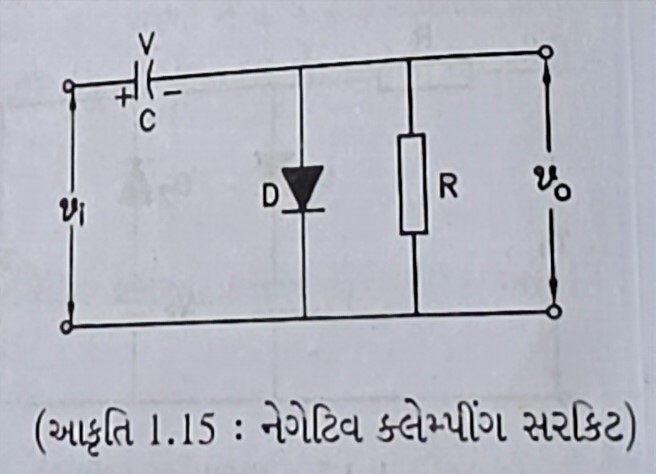Input D Output o─────┬─────|◄──────┬─────o | ─┴─ C │ | R └─────────────┘ Ground
- ઓપરેશન (Operation): Capacitor charges during one half-cycle, maintaining DC level
- પ્રકારો (Types):
- પોઝિટિવ ક્લેમ્પર (Positive Clamper): તરંગસ્વરૂપ ઉપર તરફ ખસે છે
- નેગેટિવ ક્લેમ્પર (Negative Clamper): તરંગસ્વરૂપ નીચે તરફ ખસે છે
- આધારિત ક્લેમ્પર (Biased Clamper): ચોક્કસ ડીસી સ્તર પર શિફ્ટ
યાદ રાખવાની ટૂંકી રીત (Mnemonic): ક્લેમ્પ્સ સતત ટોચ પર નીચે આવે છે (Clamps Peaks Down Consistently)
Q4 (b) OLED ની કામગીરી અને ઉપયોગો સમજાવો. OR [4 marks]
જવાબ: OLED (ઓર્ગેનિક લાઇટ એમિટિંગ ડાયોડ) એ કાર્બનિક સંયોજનોનો ઉપયોગ કરતી એક ડિસ્પ્લે ટેકનોલોજી છે જે ઇલેક્ટ્રિક કરંટ પસાર થાય ત્યારે પ્રકાશ ઉત્સર્જન કરે છે.
flowchart LR
A[Electric Current
વિદ્યુત કરંટ] --> B[OLED Layer
OLED સ્તર]
B --> C[Light Emission
પ્રકાશ ઉત્સર્જન]
| સ્તર(Layer) | કાર્ય (Function) |
|---|---|
| કેથોડ | ઇલેક્ટ્રોન ઇન્જેક્ટ કરે છે |
| ઉત્સર્જન સ્તર | પ્રકાશ ફેંકતી કાર્બનિક સામગ્રી |
| વાહક સ્તર | એનોડમાંથી છિદ્રોનું સંચાલન કરે છે |
| એનોડ | છિદ્રો દાખલ કરે છે (સામાન્ય રીતે પારદર્શક) |
- કાર્યકારી સિદ્ધાંત (Working Principle): ઇલેક્ટ્રોન-છિદ્ર પુનઃસંયોજન ફોટોન બનાવે છે
- સ્વયં પ્રકાશિત (Self-illuminating): LCD ની જેમ બેકલાઇટની જરૂર નથી
- પ્રકારો (Types): PMOLED (પેસિવ મેટ્રિક્સ) અને AMOLED (એક્ટિવ મેટ્રિક્સ)
- ફાયદા (Advantages): પાતળા, હળવા, પહોળા જોવાના ખૂણા, વધુ સારો કોન્ટ્રાસ્ટ
એપ્લિકેશન્સ (Applications):
- સ્માર્ટફોન અને ટેબ્લેટ
- ટેલિવિઝન સ્ક્રીનો
- ડિજિટલ કેમેરા ડિસ્પ્લે
- પહેરવા યોગ્ય ઉપકરણો
- લાઇટિંગ પેનલ્સ
યાદ રાખવાની ટૂંકી રીત (Mnemonic): "ઓર્ગેનિક સ્તરો ડાયોડ-લાઇટ ઉત્સર્જિત કરે છે" (Organic Layers Emit Diode-light)
Q4 (c) રિલે ડ્રાઇવર તરીકે વપરાતા ટ્રાન્ઝિસ્ટરનું વર્ણન કરો. OR [7 marks]
જવાબ: રિલે ડ્રાઇવર રિલેને નિયંત્રિત કરવા માટે ટ્રાન્ઝિસ્ટરનો ઉપયોગ કરે છે, જે નીચા-કરંટ નિયંત્રણ સિગ્નલને ઉચ્ચ-કરંટ લોડને સ્વિચ કરવાની મંજૂરી આપે છે.
flowchart LR
A[Control Signal
નિયંત્રણ સંકેત] --> B[Transistor
ટ્રાન્ઝિસ્ટર]
B --> C[Relay Coil
રિલે કોઇલ]
C --> D[Switched Load
સ્વિચ્ડ લોડ]
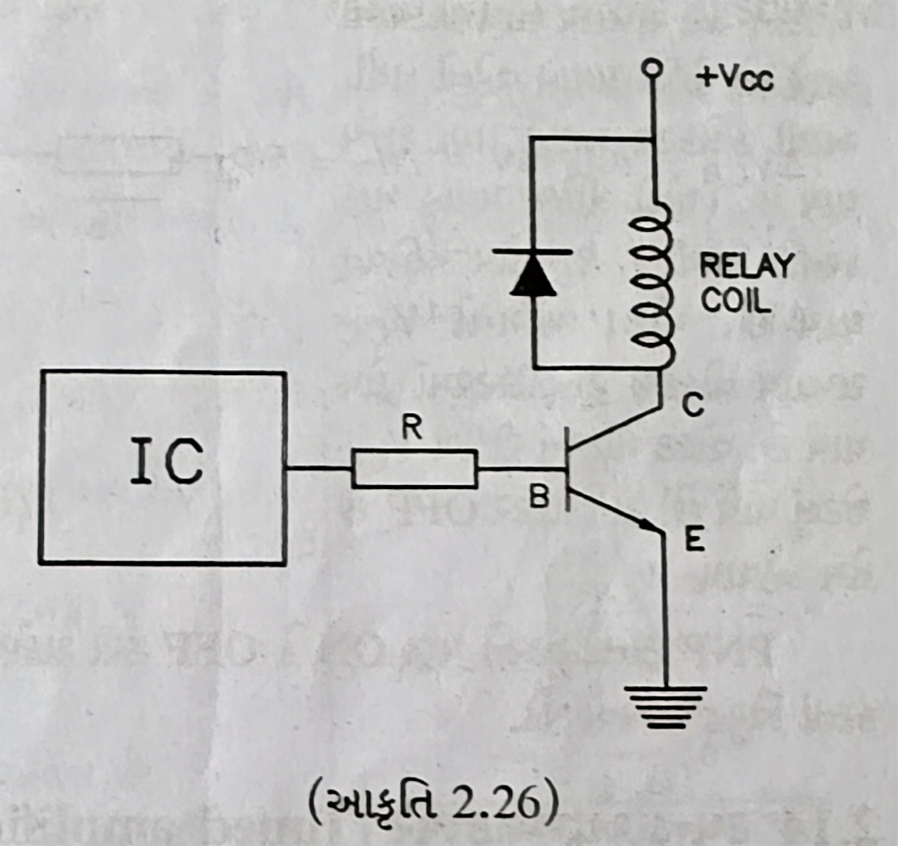+Vcc │ ┌┐ ┌┘└┐ Relay │ │ Coil └┐┌┘ ││ ││ Flyback ││ Diode ││ ┌─┐ └┴────┤<├─┐ └─┘ │ ┌──┴─┐ │ │ │ │ Transistor Input ─────┤ │ │ │ └────┘ │ GND
| કોમ્પોનેન્ટ (Component) | કાર્ય (Function) |
|---|---|
| ટ્રાન્ઝિસ્ટર | રિલે ચલાવવા માટે નિયંત્રણ સિગ્નલને વિસ્તૃત કરે છે |
| ફ્લાયબેક ડાયોડ | ટ્રાન્ઝિસ્ટરને પાછળના EMF થી સુરક્ષિત કરે છે |
| બેઝ રેઝિસ્ટર | બેઝ કરંટ મર્યાદિત કરે છે |
| રિલે કોઇલ | ઇલેક્ટ્રોમેગ્નેટિક સ્વીચ |
એપ્લિકેશન્સ (Applications):
- મોટર નિયંત્રણ સર્કિટ (Motor control circuits)
- ઔદ્યોગિક ઓટોમેશન (Industrial automation)
- ઓટોમોટિવ ઇલેક્ટ્રોનિક્સ (Automotive electronics)
- ઘરનાં ઉપકરણોનું નિયંત્રણ (Home appliance control)
- પાવર વિતરણ પ્રણાલીઓ (Power distribution systems)
યાદ રાખવાની ટૂંકી રીત (Mnemonic): "ટાઈની રેગ્યુલેટ્સ ડ્રાઇવિંગ રિલે" (Tiny Regulates Driving Relays)
Q5 (a) LM317 IC નો ઉપયોગ કરીને ચલ પાવર સપ્લાયનો સર્કિટ ડાયાગ્રામ દોરો. [3 marks]
જવાબ: LM317 એક એડજસ્ટેબલ વોલ્ટેજ રેગ્યુલેટર છે જેનો ઉપયોગ ચલ પાવર સપ્લાય બનાવવા માટે થઈ શકે છે.
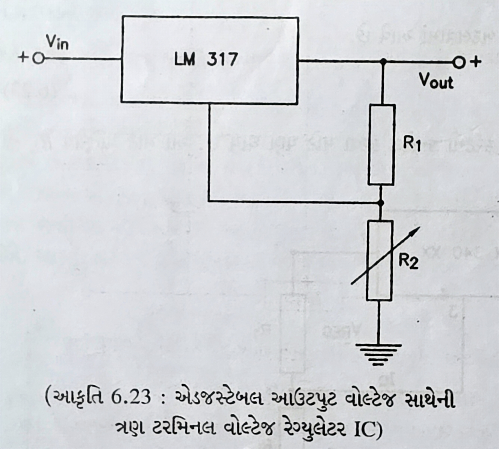LM317 Input ┌───┐ o─────────┤IN │ │ │ │ADJ├─┬─────┬───o Output │ │ │ │ └───┘ │ │ │ │ │ R1 R2 C2 │ │ │ └───┴─────┘ GND
-
કોમ્પોનેન્ટ્સ (Components):
- LM317: એડજસ્ટેબલ વોલ્ટેજ રેગ્યુલેટર IC
- R1: સ્થિર 240Ω રેઝિસ્ટર
- R2: વેરિયેબલ રેઝિસ્ટર (પોટેન્ટિઓમીટર)
- C1, C2: ફિલ્ટર કેપેસિટર્સ
-
આઉટપુટ વોલ્ટેજ (Output Voltage): VOUT = 1.25 × (1 + R2/R1)
યાદ રાખવાની ટૂંકી રીત (Mnemonic): "LM317 વોલ્ટેજ એડજસ્ટેબલ બનાવે છે" (LM317 Makes Voltage Adjustable)
Q5 (b) UPS નું કાર્ય સમજાવો. [4 marks]
જવાબ: જ્યારે મુખ્ય પાવર નિષ્ફળ જાય છે ત્યારે UPS (અનઇન્ટરપટિબલ પાવર સપ્લાય) કટોકટીની વીજળી પૂરી પાડે છે.
flowchart LR
A[AC Mains
એસી મેઇન્સ] --> B[Rectifier
સુધારક]
B --> C[Battery Charger
બેટરી ચાર્જર]
C --> D[Battery
બેટરી]
D --> E[Inverter
ઇન્વર્ટર]
E --> F[Output Load
આઉટપુટ લોડ]
A -.Bypass.-> F
| યુપીએસ પ્રકાર (UPS Type) | ઓપરેશન (Operation) |
|---|---|
| ઑફલાઇન/સ્ટેન્ડબાય | પાવર નિષ્ફળ જાય ત્યારે બેટરી પર સ્વિચ કરે છે |
| લાઇન-ઇન્ટરેક્ટિવ | વોલ્ટેજનું નિયમન કરે છે અને બેટરી પર સ્વિચ કરે છે |
| ઓનલાઇન/ડબલ-કન્વર્ઝન | હંમેશા બેટરીથી પાવર આપે છે, સતત ચાર્જ થાય છે |
- મુખ્ય કોમ્પોનેન્ટો (Main Components): Rectifier, battery, inverter, control circuit
- કાર્યો (Functions):
- પાવર કન્ડીશનીંગ (Power conditioning)
- વોલ્ટેજ નિયમન (Voltage regulation)
- સર્જ પ્રોટેક્શન (Surge protection)
- બેટરી બેકઅપ (Battery backup)
યાદ રાખવાની ટૂંકી રીત (Mnemonic): "બ્લેકઆઉટ દરમિયાન અવિરત વીજ પુરવઠો પૂરો પાડવામાં આવ્યો" (Uninterrupted Power Supplied During Blackouts)
Q5 (c) SMPS બ્લોક ડાયાગ્રામ દોરો અને સમજાવો. [7 marks]
જવાબ: SMPS (સ્વિચ મોડ પાવર સપ્લાય, Switch Mode Power Supply) વિદ્યુત શક્તિને કાર્યક્ષમ રીતે રૂપાંતરિત કરવા માટે સ્વિચિંગ નિયમનનો ઉપયોગ કરે છે.
flowchart LR
A[AC Input
AC ઇનપુટ] --> B[EMI Filter
EMI ફિલ્ટર]
B --> C[Rectifier & Filter
રેક્ટિફાયર અને ફિલ્ટર]
C --> D[High Frequency
Switching Circuit
ઉચ્ચ ફ્રીક્વન્સી
સ્વિચિંગ સર્કિટ]
D --> E[Transformer
ટ્રાન્સફોર્મર]
E --> F[Output Rectifier & Filter
આઉટપુટ રેક્ટિફાયર અને ફિલ્ટર]
F --> G[DC Output
DC આઉટપુટ]
H[Feedback & Control
ફીડબેક અને નિયંત્રણ] --> D
F --> H
| બ્લોક (Block) | કાર્ય (Function) |
|---|---|
| EMI ફિલ્ટર | ઇલેક્ટ્રોમેગ્નેટિક હસ્તક્ષેપ ઘટાડે છે |
| રેક્ટિફાયર & ફિલ્ટર | AC ને DC માં રૂપાંતરિત કરે છે અને તેને સુંવાળું બનાવે છે |
| સ્વિચિંગ સર્કિટ | ઉચ્ચ ફ્રીક્વન્સી પર ડીસી ચોપ્સ |
| ટ્રાન્સફોર્મર | આઇસોલેશન અને વોલ્ટેજ કન્વર્ઝન પૂરું પાડે છે |
| આઉટપુટ રેક્ટિફાયર | ઉચ્ચ-આવર્તન AC ને DC માં પાછું રૂપાંતરિત કરે છે |
| ફીડબેક સર્કિટ | આઉટપુટ વોલ્ટેજનું નિયમન કરે છે |
- ફાયદા (Advantages): ઉચ્ચ કાર્યક્ષમતા (70-90%), નાનું કદ, ઓછું વજન
- ઓપરેશન (Operation): 20-200 kHz પર PWM (પલ્સ પહોળાઈ મોડ્યુલેશન, Pulse Width Modulation) નો ઉપયોગ કરે છે
- પ્રકારો (Types): આગળ, ફ્લાયબેક, પુશ-પુલ, અડધો પુલ, સંપૂર્ણ પુલ
- એપ્લિકેશન્સ (Applications): કમ્પ્યુટર, ટીવી, મોબાઇલ ચાર્જર, એલઇડી ડ્રાઇવર્સ
યાદ રાખવાની ટૂંકી રીત (Mnemonic): "સ્વિચ પાવરને સ્થિર બનાવે છે" (Switch Makes Power Stable)
Q5 (a) +15 v પાવર સપ્લાય માટે તેના IC નો ઉપયોગ કરીને સર્કિટ ડાયાગ્રામ દોરો અને સંક્ષિપ્તમાં સમજાવો. OR [3 marks]
જવાબ: 7815 વોલ્ટેજ રેગ્યુલેટર IC નો ઉપયોગ કરીને +15V પાવર સપ્લાય બનાવી શકાય છે.
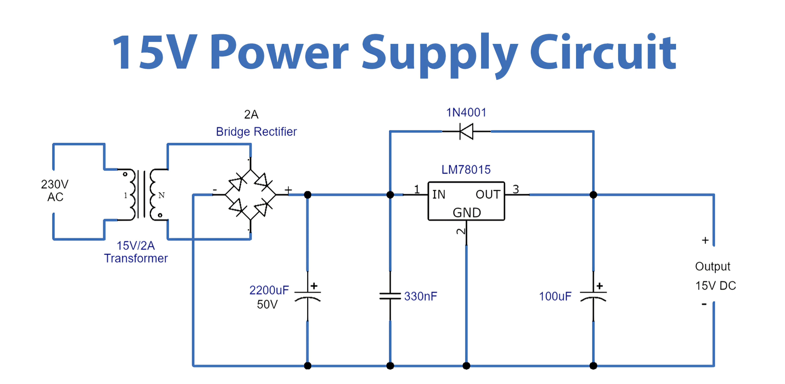AC Input Bridge 7815 o Rectifier ┌───┐ ~~~~~ ┌───┐ │ │ o │ ├──────┤IN │ │ │ │ │ +15V │ │ C1 │OUT├─────────o │ ├──┐ │ │ C2 └───┘ │ │ │ │ │ └───┘ │ │ │ │ └─────┴──────┘ GND
-
કોમ્પોનેન્ટ્સ (Components):
- 7815: સ્થિર +15V વોલ્ટેજ રેગ્યુલેટર IC
- બ્રિજ રેક્ટિફાયર (Bridge Rectifier): AC ને ધબકતા DC માં રૂપાંતરિત કરે છે
- C1: ઇનપુટ ફિલ્ટર કેપેસિટર (1000-2200µF)
- C2: આઉટપુટ ફિલ્ટર કેપેસિટર (10-100µF)
-
કાર્યરત (Working): AC ને સુધારે છે, તેને ફિલ્ટર કરે છે, પછી સ્થિર +15V DC પર નિયમન કરે છે
- જે એક સર્કિટ બનાવે છે જ્યાં 7815 નું ઇનપુટ:
- Pin 1: રેક્ટિફાઇડ DC લે છે.
- Pin 2: ગ્રાઉન્ડ (GND) સાથે જોડાય છે
- Pin 3: સ્થિર +15V પ્રદાન કરે છે
- જે એક સર્કિટ બનાવે છે જ્યાં 7815 નું ઇનપુટ:
યાદ રાખવાની ટૂંકી રીત (Mnemonic): "7815 વોલ્ટેજને પંદર સુધી સુધારે છે" (7815 Fixes Voltage To Fifteen)
Q5 (b) સૌર બેટરી ચાર્જર સર્કિટનું કાર્ય સમજાવો. OR [4 marks]
જવાબ: સૌર બેટરી ચાર્જર સૂર્યપ્રકાશને વિદ્યુત ઊર્જામાં રૂપાંતરિત કરીને બેટરી ચાર્જ કરે છે.
flowchart LR
A[Solar Panel
સોલાર પેનલ] --> B[Charge Controller
ચાર્જ કંટ્રોલર]
B --> C[Battery
બેટરી]
C --> D[Load
લોડ]
| કોમ્પોનેન્ટ (Component) | કાર્ય (Function) |
|---|---|
| સોલાર પેનલ | સૂર્યપ્રકાશને વીજળીમાં રૂપાંતરિત કરે છે |
| બ્લોકિંગ ડાયોડ | રાત્રે પેનલ દ્વારા બેટરી ડિસ્ચાર્જ થતી અટકાવે છે |
| ચાર્જ કંટ્રોલર | ચાર્જિંગ વોલ્ટેજ અને કરંટનું નિયમન કરે છે |
| બેટરી | વિદ્યુત ઉર્જાનો સંગ્રહ કરે છે |
-
ઓપરેટિંગ મોડ્સ (Operating Modes):
- બલ્ક ચાર્જિંગ (Bulk Charging): ~80% ચાર્જ થાય ત્યાં સુધી મહત્તમ કરંટ
- શોષણ (Absorption): સતત વોલ્ટેજ, ઘટતો કરંટ
- ફ્લોટ/ટ્રિકલ (Float/Trickle): સંપૂર્ણ ચાર્જ જાળવી રાખે છે
-
સુરક્ષા સુવિધાઓ (Protection Features): ઓવરચાર્જ, ઓવર-ડિસ્ચાર્જ, રિવર્સ પોલેરિટી
યાદ રાખવાની ટૂંકી રીત (Mnemonic): "સૂર્ય બેટરીને સુરક્ષિત રીતે ચાર્જ કરે છે" (Sun Charges Batteries Safely)
Q5 (c) સ્વીચ મોડ પાવર સપ્લાય સાથે રેખીય નિયમન કરેલ પાવર સપ્લાયની સરખામણીની ચર્ચા કરો. OR [7 marks]
જવાબ:
| પેરામીટર્સ (Parameter) | લિનિયર પાવર સપ્લાય (Linear Power Supply) | સ્વિચ મોડ પાવર સપ્લાય (Switch Mode Power Supply) |
|---|---|---|
| સંચાલન સિદ્ધાંત (ઓપરેટિંગ પ્રિન્સિપાલ) | સતત વોલ્ટેજ નિયમન | ઉચ્ચ-ફ્રીક્વન્સી સ્વિચિંગ |
| કાર્યક્ષમતા | ઓછું (30-40%) | ઉચ્ચ (70-90%) |
| કદ & વજન | મોટું અને ભારે | કોમ્પેક્ટ અને હલકો |
| ગરમીનો બગાડ | ઉચ્ચ | ઓછું |
| આઉટપુટ અવાજ | ખૂબ જ ઓછું | વધુ (સ્વિચિંગ અવાજ) |
| રિસ્પોન્સ સમય | ઝડપી | ધીમું |
| કોમ્પોનેન્ટ સંખ્યા | નીચું | ઉચ્ચ |
| કિંમત | ઓછી શક્તિ માટે ઓછું ખર્ચાળ | ઉચ્ચ શક્તિ માટે વધુ ખર્ચાળ |
| જટિલતા | સરળ ડિઝાઇન | જટિલ ડિઝાઇન |
| EMI (એલેકટ્રોમેગ્નેટિક ઇન્ટરફેરેન્સ) | નીચું | ઉચ્ચ (ફિલ્ટરિંગ જરૂરી છે) |
flowchart TB
subgraph Linear [Linear લીનીયર]
A1[Transformer
ટ્રાન્સફોર્મર] --> B1[Rectifier
રેક્ટિફાયર]
B1 --> C1[Filter
ફિલ્ટર]
C1 --> D1[Series Pass Element
શ્રેણી પાસ એલિમેન્ટ]
D1 --> E1[Output
આઉટપુટ]
end
subgraph SMPS [SMPS “Switch Mode Power Supply
સ્વિચ મોડ પાવર સપ્લાય”]
A2[Rectifier
રેક્ટિફાયર] --> B2[Switch
સ્વિચ]
B2 --> C2[Transformer
ટ્રાન્સફોર્મર]
C2 --> D2[Rectifier & Filter
રેક્ટિફાયર અને ફિલ્ટર]
D2 --> E2[Output
આઉટપુટ]
F2[Feedback
ફીડબેક] --> B2
end
એપ્લિકેશન્સ (Applications):
- લીનીયર (Linear): ઑડિઓ સાધનો, પ્રયોગશાળાનાં સાધનો, સંવેદનશીલ સર્કિટ
- SMPS: કમ્પ્યુટર, ટીવી, મોબાઇલ ચાર્જર, ઔદ્યોગિક વીજ પુરવઠો
યાદ રાખવાની ટૂંકી રીત (Mnemonic): "લીનિયરને ઓછો અવાજ ગમે છે, સ્વિચ કરવાથી કદ બચે છે" (Linear Loves Low noise, Switching Saves Size)